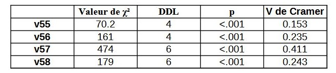

Cette étude vise à analyser les différences dans les perceptions de la santé mentale et de l’isolement social entre la France et le Japon. L'objectif est d'examiner comment ces thématiques sont abordées à travers des données statistiques et d'identifier les facteurs influençant ces perceptions en fonction des contextes culturels.
Quelques représentations graphiques illustrant les tendances observées :
Graphique 1 : Répartition de la perception d'isolement selon les pays.
Graphique 2 : Répartition de la perception de dépression
Cette étude met en avant l’importance des facteurs culturels dans la perception de la santé mentale. L'approche japonaise de l’isolement semble plus intégrée et moins stigmatisée, tandis qu’en France, l’isolement est davantage perçu comme un problème nécessitant une intervention sociale. Une analyse complémentaire pourrait explorer les liens entre les politiques publiques de chaque pays et la perception individuelle du bien-être psychologique.